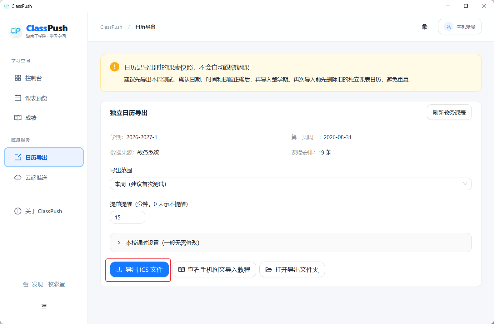
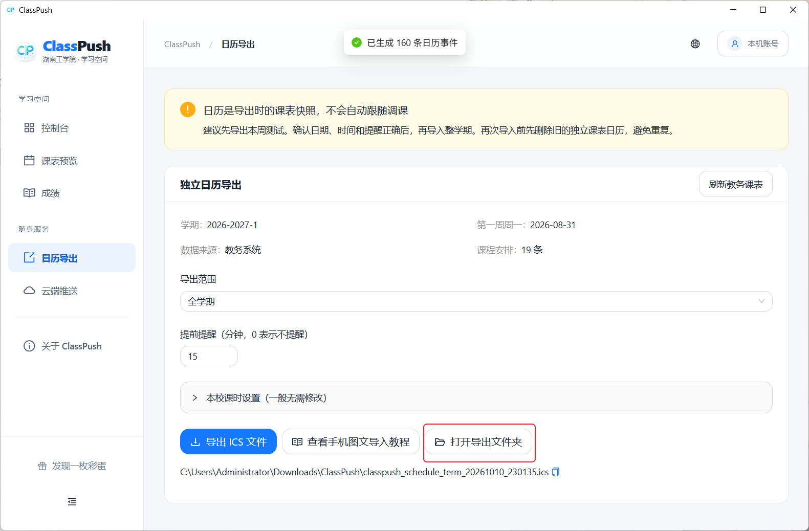
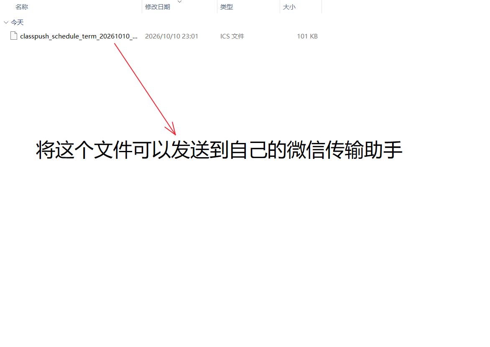
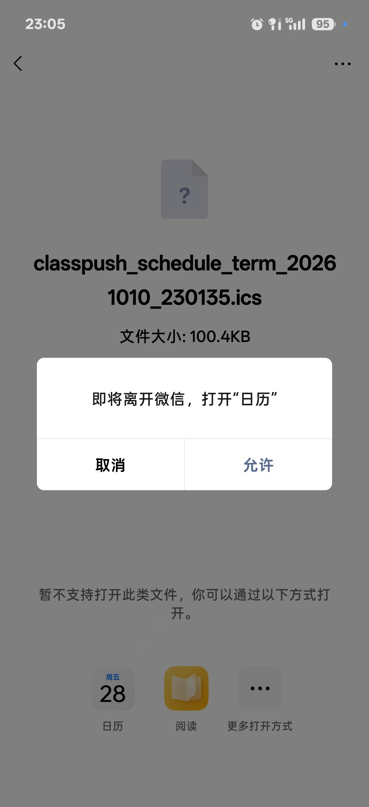
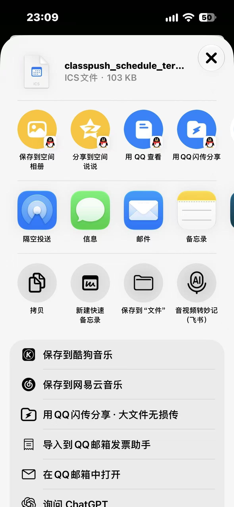
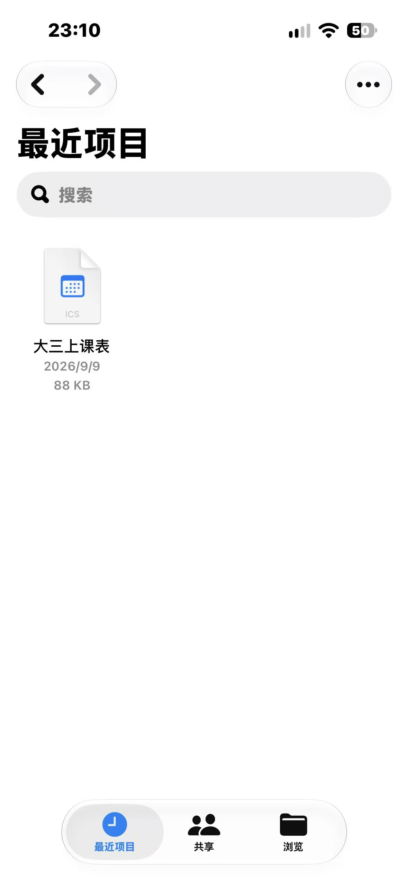
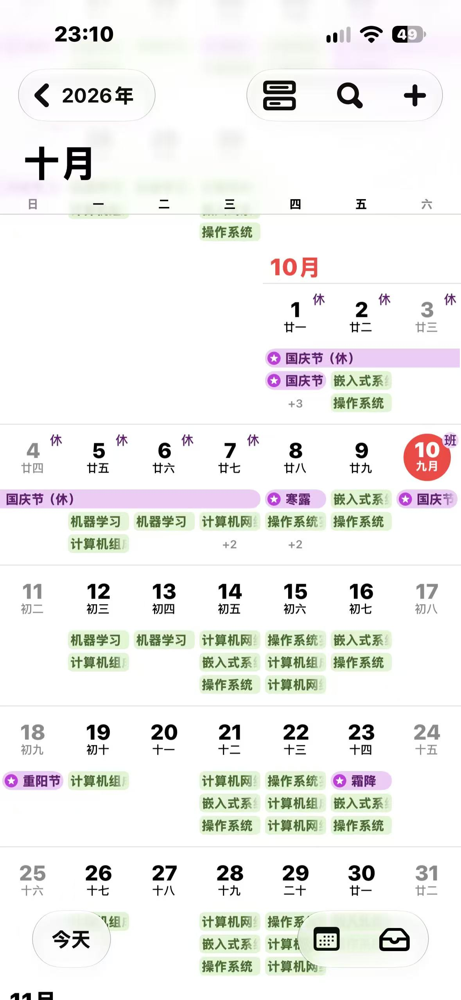

1
核对日期，选择导出范围
先刷新教务课表，确认学期、第一周周一、提醒时间。需要调整课时，可展开“课时设置”。第一次选“本周”，点击“导出 ICS 文件”。
本学期示例：2026-2027-1 的第二周周一为 9 月 7 日，对应第一周周一为 2026 年 8 月 31 日；其他学期以教务校历为准。

电脑导出一次，手机日历随身看。不用填写 UID，也不用让电脑一直开着。
在桌面版右上角登录本校教务账号，进入“日历导出”。点击图片可查看原图。
先刷新教务课表，确认学期、第一周周一、提醒时间。需要调整课时，可展开“课时设置”。第一次选“本周”，点击“导出 ICS 文件”。
本学期示例：2026-2027-1 的第二周周一为 9 月 7 日，对应第一周周一为 2026 年 8 月 31 日；其他学期以教务校历为准。

看到导出成功后，点击“打开导出文件夹”。默认位于系统下载目录的 ClassPush 子文件夹；导出数量会随账号和范围变化，截图中的 160 个事件只是示例。

将后缀为 .ics 的文件发送到手机，可使用微信文件传输助手、数据线或其他文件传输工具。不要只发截图，也不要修改文件后缀。
这里的微信仅用于传文件；ClassPush 的云端通知仍在 WxPusher 独立 App 接收。

不同品牌的按钮名称可能不同，按手机实际提示操作。
在手机打开收到的 ICS 文件，选择“用其他应用打开”或分享，找到系统“日历”。若提示即将离开微信打开日历，点击“允许”，然后在日历内确认导入。
有目标日历选项时，优先选择独立的“ClassPush 课表”。如果没有“日历”选项，先保存到手机文件管理器，再尝试打开；部分日历不支持 ICS 导入，需要使用支持该格式的日历应用。

以下为开发者提供的实机操作路径。系统版本和文件打开方式不同，入口可能有所差异。
打开收到的文件，点击分享，选择“保存到‘文件’”，记住保存位置。

在“文件”中找到 ICS，长按并拖起。保持按住，另一只手指返回主屏幕、打开“日历”，将文件拖入后松手，按提示添加事件。

找到有课的一天，打开事件详情，核对日期、起止时间、地点和提醒。截图仅展示导入效果，不代表所有账号课程相同。
